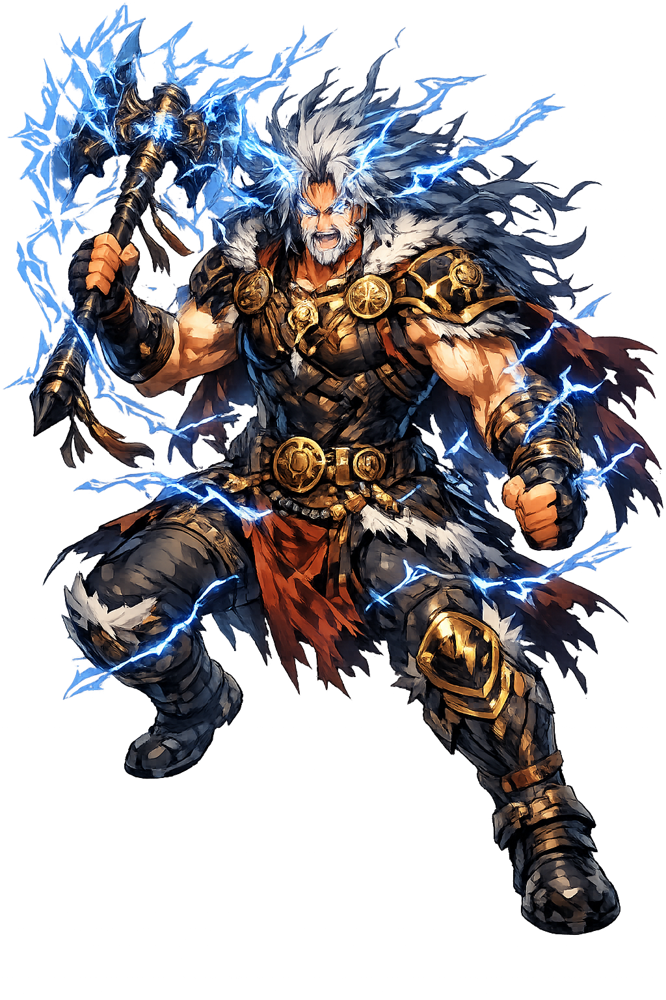

The Authentic Orthography
God of Thunder, Lightning and Storms · Lithuanian/Baltic thunder deity, cognate with Slavic Perun and Indo-Iranian Parjanya.

Unicode restoration and ASCII comparison
Perkūnas
The name survives only in scholarly transliteration. Perkūnas is the standard Baltic romanisation, documented in academic sources — “Lithuanian/Baltic thunder deity, cognate with Slavic Perun and Indo-Iranian Parjanya.”. Its macron-length vowels preserve distinctions lost in plain ASCII.
No indigenous writing system is securely attested for individual baltic names. The form shown is a modern scholarly transliteration.
perkunas
Reduced to plain perkunas, the name loses everything that made it specific: macron-length vowels. What remains is an ASCII string that machines can parse but that no longer speaks with its original voice.
Perkūnas
The Unicode restoration recovers what ASCII flattened. Perkūnas restores macron-length vowels, returning the name to its original written dignity. The domain encodes to Punycode, but the browser displays the truth.
Perkūnas.com → xn--perknas-3sb.com
The non-ASCII characters in Perkūnas are encoded while the ASCII remains visible. To the DNS, it is Punycode. To humanity, it is Perkūnas.
How Perkūnas is preserved in writing
No indigenous writing system is securely attested for individual baltic names. The form shown is a modern scholarly transliteration.
Contribute scholarly provenance →How Perkūnas was spoken
Storms, Justice, and the Baltic Sky-Father
Perkūnas is the Lithuanian thunder god, the voice of the oak and the bolt that strikes the unjust. In Baltic folklore he rides across the sky in a flaming chariot, hurling stone axes and lightning arrows at demons, liars, and those who break their oaths. He is not merely weather; he is the moral sky, the enforcer of cosmic law in a world of dark forests and hidden spirits.
His voice is thunder and his weapon is the lightning bolt that splits the sky.
The oak is his tree; sacrifices were made at oak groves and stones struck by lightning.
He punishes oath-breakers, murderers, and those who wrong the innocent.
He battles Velnias, the devil or forest spirit, and other chthonic forces.
Stories of Perkūnas
Perkūnas's mythology is preserved largely in Lithuanian and Latvian folklore recorded in the nineteenth and early twentieth centuries. The medieval church had suppressed his cult, but the peasants remembered him as the thunderer who defended the moral order against devils, witches, and the chaos of the wilderness.
In Lithuanian folklore, Perkūnas strikes the oak with lightning, and the fire that results is sacred. Oak groves were his temples, and people would kindle new fire from a tree hit by his bolt. The oak's hardness and height made it the natural home of the sky-god's power, and acorns were gathered as protective amulets.
Latvian dainas (folk songs) sing of Pērkons striking the homes of those who swear false oaths or cheat their neighbors. The thunder god is not indifferent weather; he is a moral agent who punishes hidden crimes that human courts cannot reach. A clap of thunder during a dispute was read as his verdict.
Perkūnas frequently battles Velnias, a devil-like figure associated with the forest, cattle, and the underworld. In some tales Velnias steals the celestial cows or hides the sun; Perkūnas pursues him with thunder and lightning. The combat re-enacts the Indo-European opposition between the bright sky and the dark earth.
Perkūnas is the sky's conscience. His thunder is not random noise but a voice that says: there is a limit to what can be hidden. In an age of corporate crime and political lies, his mythology still resonates — the belief that some justice arrives not from human courts but from the sheer force of nature. To remember Perkūnas is to remember that the sky is watching, and that oaths once mattered enough to call down lightning.
Enter Extended Lore